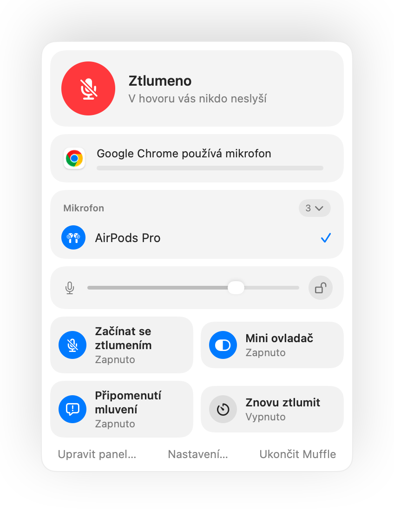
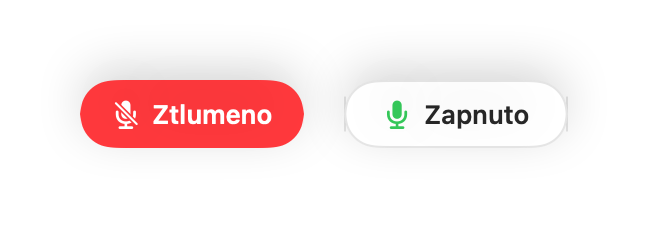
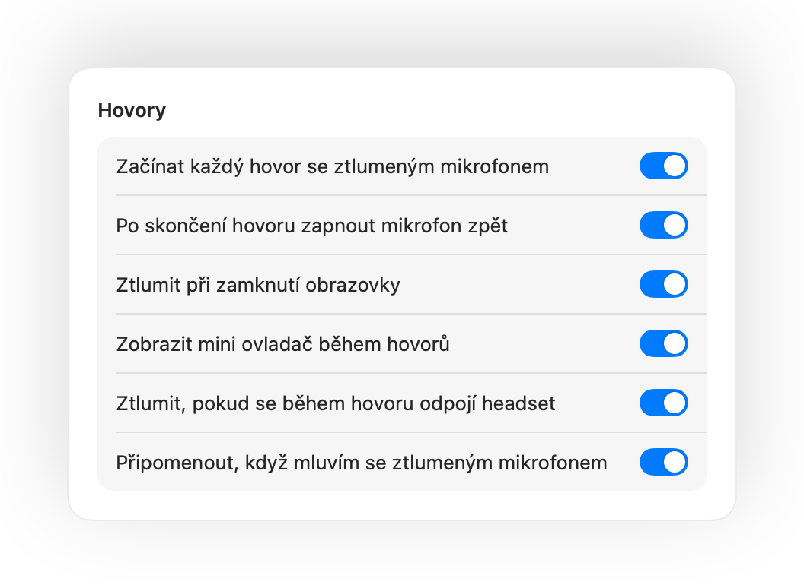
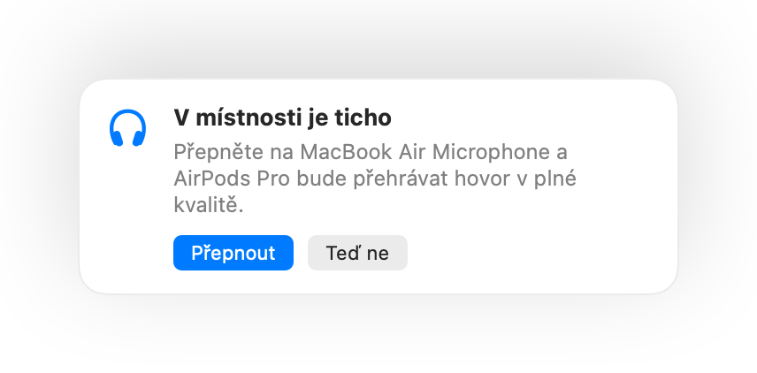
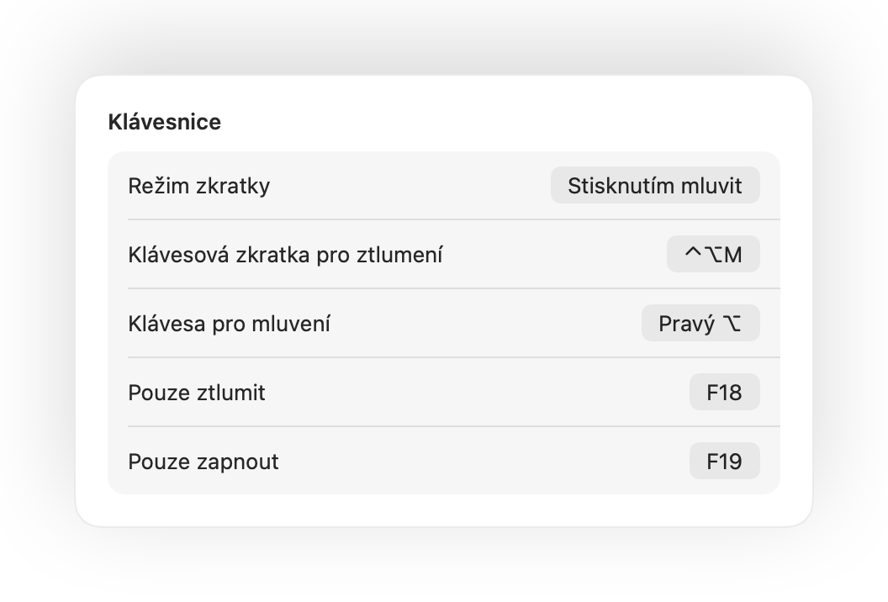

Stiskněte AirPods.
Během jakéhokoli hovoru stiskněte stopku. Muffle vypne přímo mikrofon, takže Meet, Zoom, Teams ani žádná jiná aplikace neuslyší vůbec nic.

Muffle pro Mac
Stiskněte AirPods nebo jednu klávesovou zkratku. Muffle vypíná přímo samotný mikrofon, takže Google Meet, Zoom, Teams, Slack i každá další aplikace uslyší jen ticho.
Zdarma na 3 dny. Poté jednorázová platba, žádné předplatné. Pro macOS 14 Sonoma a novější.

Muffle vypíná mikrofon na hardwarové úrovni, takže nezáleží na tom, jaká aplikace, prohlížeč nebo panel ho zrovna využívá.
Během jakéhokoli hovoru stiskněte stopku. Muffle vypne přímo mikrofon, takže Meet, Zoom, Teams ani žádná jiná aplikace neuslyší vůbec nic.

Jedna klávesová zkratka pro každou aplikaci, i když běží hovor na panelu na pozadí. Podržte ji a mluvte, nebo přepněte na stisknutím mluvit.
Muffle rozpozná váš hlas a upozorní vás dřív, než celou myšlenku vysvětlíte do prázdna.

Malé plovoucí tlačítko ukazuje stav mikrofonu a ztlumí ho jedním kliknutím. Zelená znamená zapnuto, červená ztlumeno.

Když začnete mluvit se ztlumeným mikrofonem, Muffle vás upozorní dříve, než celou myšlenku řeknete naprázdno.
Během jakéhokoli hovoru stiskněte stopku pro ztlumení a dalším stiskem mikrofon zapněte. Funguje to i v Chrome, kde Google Meet a další webové hovory stisknutí AirPods ignorují.
Control-Option-M vás ztlumí všude, i když schůzka běží v panelu na pozadí. Podržením zkratky mluvíte, po uvolnění se mikrofon znovu ztlumí.
Malé plovoucí tlačítko ukazuje stav mikrofonu během hovoru. Kliknutím ho snadno ztlumíte nebo zapnete.
Začínejte každý hovor se ztlumeným mikrofonem, zapněte mikrofon zpět po skončení hovoru a ztlumte ho vždy, když Mac zamknete.

Zapnuli jste mikrofon, abyste řekli jednu věc? Pokud potom zůstanete potichu po zvolenou dobu, Muffle mikrofon znovu ztlumí. Počítá se pouze váš hlas, nikoli psaní nebo ruch na pozadí.
Chrome, Zoom i Teams samy mění hlasitost vstupu. Uzamkněte ji a Muffle ji okamžitě vrátí zpět.
S AirPods v tiché místnosti vám Muffle doporučí mikrofon Macu, aby AirPods přehrávaly hovor v plné kvalitě. Když začne být hluk, navrhne mikrofon AirPods.

Zvolte, jak má vaše klávesová zkratka fungovat: klepnutím přepnout, podržením mluvit, nebo podržením ztlumit pro zakašlání. Přidejte samostatné klávesy pro ztlumení a zapnutí, nebo podržte jedinou klávesu jako Pravý ⌥ či další tlačítko myši.

Pokud se headset uprostřed hovoru odpojí, Muffle mikrofon ztlumí dříve, než se hovor přepne na vestavěný mikrofon Macu a pošle do konference zvuk z celé místnosti.
Ztlumujte mikrofon přes aplikaci Zkratky, Siri, Stream Deck, Raycast nebo tlačítkem v Ovládacím centru.
Zelená nebo červená záře kolem obrazovky, barevná ikona v řádku nabídek, plovoucí tlačítko a zvuk, který můžete pro jednotlivé mikrofony vypnout. Zapněte si ty, které vám vyhovují.
Muffle nikdy nenahrává, neukládá ani neodesílá zvuk. Pouze zapíná a vypíná váš mikrofon a sleduje úroveň hlasitosti. Žádné účty, žádná analytika ani sledování.
Nainstalujte Muffle z Mac App Storu a povolte přístup k mikrofonu.
Připojte se k hovoru v libovolné aplikaci jako obvykle.
Stiskněte stopku AirPods, stiskněte Control-Option-M nebo klikněte na ikonu v řádku nabídek a mikrofon se ztlumí.
Ano. Chrome nepředává stisknutí stopky AirPods webovým hovorům, proto ho Muffle zachytí a vypne přímo samotný mikrofon. To platí pro jakýkoli videohovor v panelu prohlížeče.
Aplikace pro hovory může stále ukazovat mikrofon jako zapnutý, protože Muffle vypíná mikrofon v systému a nikoli tlačítko v aplikaci. Ostatní tak jako tak slyší jen ticho. Ikona Muffle v řádku nabídek zčervená, kdykoli máte ztlumený mikrofon.
AirPods Pro, AirPods 3 a novější a AirPods Max, včetně modelů Beats s ovládáním hovorů. Klávesová zkratka i ovládání přes řádek nabídek fungují se všemi mikrofony.
Ano. Muffle funguje s každou aplikací na Macu, která používá mikrofon, ať už jde o desktopové programy nebo hovory v prohlížeči.
Ne. Vyzkoušejte všechny funkce zdarma po dobu 3 dnů a poté Muffle odemknete jednorázovým nákupem.
macOS předává stisknutí AirPods jen aplikacím, které zrovna používají mikrofon. Muffle proto během hovorů udržuje tiché spojení. Nic se nenahrává.
Při ukončení Muffle mikrofon automaticky zapne zpět, takže nikdy nezůstanete potichu.
macOS 14 Sonoma a novější. Tlačítko pro Ovládací centrum vyžaduje macOS 26 nebo novější.
Ano. V Nastavení zvolte Stisknutím mluvit a podržte zkratku, když chcete mluvit. Můžete také podržet jedinou klávesu, například Pravý ⌥ nebo fn, případně další tlačítko myši.
Když hovor používá mikrofon AirPods, sluchátka se přepnou do režimu hovoru, který přehrává zvuk v nižší kvalitě. V tiché místnosti Muffle navrhne použít mikrofon Macu, takže AirPods budou dál hrát v plné kvalitě.
Ne. Muffle rozpoznává řeč pomocí zvukové analýzy Apple přímo v zařízení, takže se počítá pouze mluvení. Psaní, klikání ani ruch na pozadí se nepočítají a nic se nenahrává.
Stručné a praktické odpovědi, jak ztlumit mikrofon na Macu v každé aplikaci.
Vyzkoušejte Muffle zdarma po dobu 3 dnů.